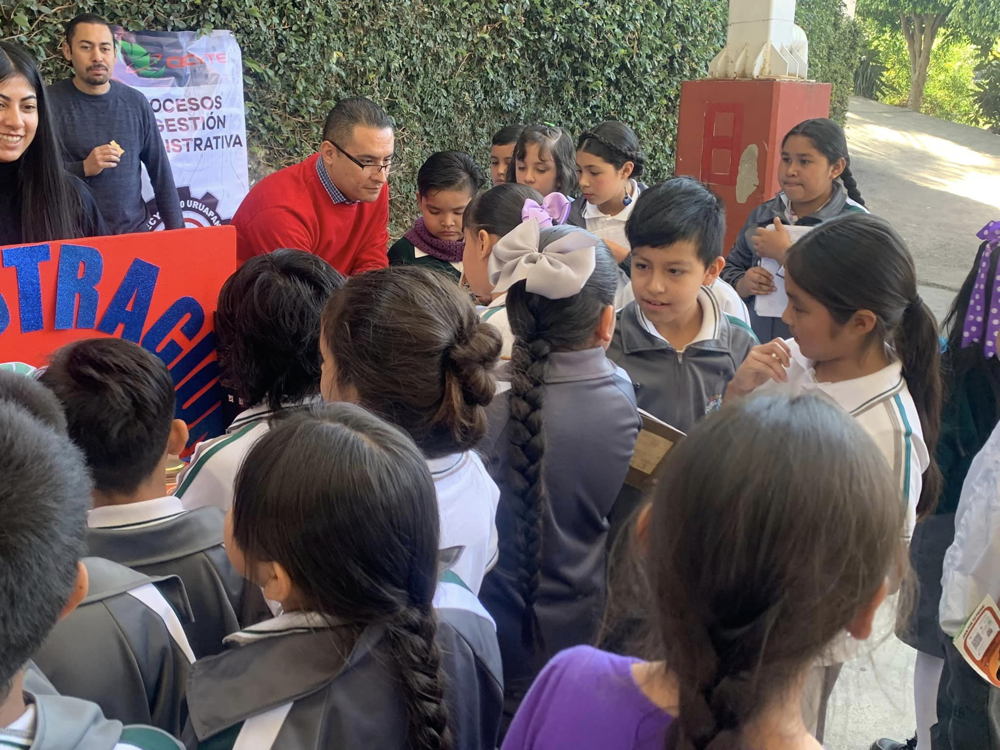

En un mundo cada vez más complejo y dinámico, la comprensión de los procesos de gestión administrativa se ha vuelto fundamental, incluso desde una edad temprana. Enseñar a los niños sobre estos procesos no solo les proporciona una base sólida para futuros roles profesionales, sino que también les equipa con habilidades prácticas y una comprensión fundamental del funcionamiento de las organizaciones.
Además, enseñar a los niños sobre procesos de gestión administrativa fomenta habilidades importantes como la organización, la toma de decisiones, la resolución de problemas y la gestión del tiempo. Estas habilidades no solo son útiles en el entorno laboral, sino que también son esenciales para la vida diaria. Desde administrar su tiempo de estudio hasta planificar actividades extracurriculares, los niños que comprenden los principios de gestión administrativa están mejor equipados para enfrentar los desafíos que se les presentan.
En la etapa de la secundaria, entender los procesos de gestión administrativa adquiere una relevancia aún mayor. Estos procesos no solo son parte integral del mundo empresarial, sino que también afectan el funcionamiento de organizaciones gubernamentales, instituciones educativas y organizaciones sin fines de lucro.
Emprendimiento: Con la creciente cultura empresarial y la facilidad para iniciar nuevos proyectos, es fundamental que los estudiantes comprendan los aspectos básicos de la gestión administrativa. Esto les brinda la capacidad de planificar, organizar y dirigir sus propios emprendimientos desde una edad temprana.
Desarrollo de habilidades prácticas: La gestión administrativa implica una variedad de habilidades prácticas, como la planificación, la organización, la toma de decisiones y la gestión del tiempo. Estas habilidades son relevantes tanto en la vida laboral como en la cotidiana, y enseñarlas a los estudiantes de secundaria les proporciona herramientas útiles para enfrentar desafíos futuros.

Fomento del pensamiento crítico: La comprensión de los procesos de gestión administrativa implica analizar situaciones, identificar problemas y buscar soluciones efectivas. Esto fomenta el desarrollo del pensamiento crítico y la capacidad de resolver problemas de manera creativa, habilidades que son valiosas en todos los aspectos de la vida.
Preparación para roles de liderazgo: Los estudiantes que comprenden los principios de gestión administrativa están mejor preparados para asumir roles de liderazgo en el futuro. Ya sea liderando equipos deportivos, clubes estudiantiles o proyectos académicos, estas habilidades les permiten guiar y motivar a otros de manera efectiva.
Conciencia del valor del tiempo: La gestión del tiempo es un aspecto crucial de la gestión administrativa. Al enseñar a los niños a planificar sus tareas y actividades de manera eficiente, se les ayuda a comprender el valor del tiempo y cómo utilizarlo de manera efectiva para lograr sus metas.
Conciencia del entorno empresarial: Incluso si los estudiantes no planean trabajar en el mundo empresarial, la comprensión de los procesos de gestión administrativa les proporciona una apreciación del funcionamiento interno de las organizaciones. Esto les permite comprender mejor cómo se toman decisiones y se gestionan recursos en una variedad de contextos.

Además, la enseñanza de estos conceptos desde una edad temprana puede fomentar una mentalidad empresarial y una comprensión de la importancia del trabajo en equipo y la colaboración. Los niños que entienden cómo funcionan las organizaciones están mejor preparados para liderar equipos, trabajar de manera efectiva con otros y contribuir de manera significativa a proyectos grupales.
Preparación para el futuro: Muchos estudiantes eventualmente ingresarán al mundo laboral o buscarán emprender sus propios proyectos empresariales. Comprender los procesos de gestión administrativa desde una edad temprana les proporciona una base sólida para el éxito futuro en roles profesionales.
Ética y responsabilidad: La gestión administrativa también abarca temas éticos y de responsabilidad social, como la toma de decisiones éticas, la equidad en el trato a los empleados y la responsabilidad ambiental. Enseñar a los estudiantes sobre estos aspectos les ayuda a desarrollar un sentido de ética y responsabilidad en sus futuras actividades profesionales y personales.

DPromoción de la responsabilidad: Aprender sobre gestión administrativa enseña a los niños la importancia de asumir responsabilidades, tanto en sus actividades escolares como en sus futuras carreras profesionales.
Estímulo de la innovación: La gestión administrativa no solo se trata de seguir reglas y procedimientos existentes, sino también de encontrar formas creativas de resolver problemas y mejorar procesos. Al exponer a los niños a estos conceptos, se les anima a ser innovadores y a pensar fuera de lo común.
.png)